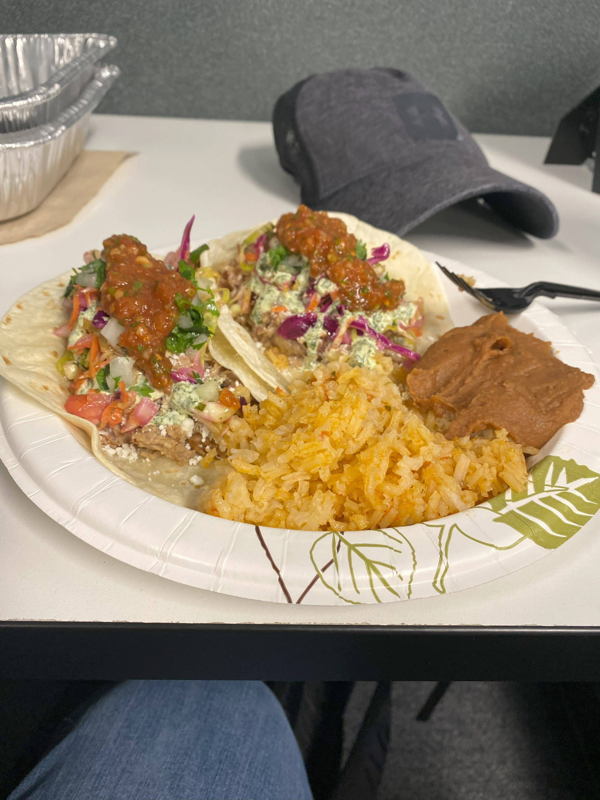

Pork Tacos

Meat Church Recipe HERE
- Preheat your smoker to 250°F. Use a heavier smoke wood (oak, mesquite, hickory, or pecan) or a pellet
blend for the best flavor.
- Remove all excess fat from the pork butt.
- Cover the pork butt thoroughly in hot sauce. Liberally season all sides with Meat Church Dia de la
Fajita Seasoning. Let it sit for at least 15 minutes so the seasoning adheres.
- Place the pork butt directly on the grate, fat side down. Smoke for about 7–8 hours (plan on about an
hour per pound) until a good bark forms and the internal temperature reaches at least 170°F (about 5–6
hours in).
- Remove the pork butt and place it in a half steam pan. Apply more hot sauce and seasoning, add sliced
butter on top, and pour chicken stock in the bottom of the pan. Cover tightly with foil and return to
the smoker.
- Continue cooking until the pork butt reaches 205°F internal temperature and is probe tender (no
resistance when tested with an instant-read thermometer).
- Let the pork rest for at least 30 minutes. Optionally, separate the au jus with a fat separator for
later use. Shred or pull the pork, sprinkle more seasoning, and toss with the au jus.
- Build tacos or sandwiches with the pulled pork and enjoy!